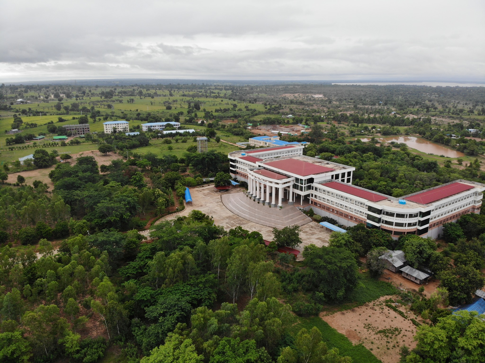
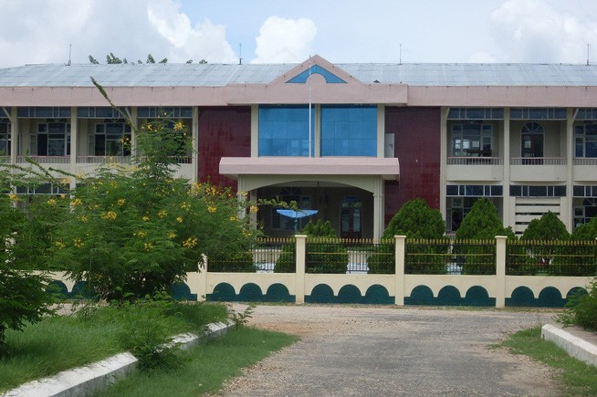

ကွန်ပျူတာတက္ကသိုလ်(မကွေး)
ကွန်ပျူတာတက္ကသိုလ် (မကွေး)သည် မကွေးတိုင်းဒေသကြီး၊ မကွေးမြို့၊ မကြီးကန်ကျေးရွာအုပ်စု၊
မကြီးကန်ကွင်းအမှတ်
(၁၆၆၀)၊ မကွေး-တောင်တွင်းကြီးကားလမ်းမဘေး မိုင်တိုင်အမှတ် ၃၂၅/၂ နှင့် ၃၂၅/၅ ကြားတည်ရှိပြီး၊
အကျယ်အဝန်းမှာ
(၅၀)ဧက ရှိသည်။
သမိုင်းကြောင်း
၂၀၀၀ ခုနှစ်၊ နိုဝင်ဘာလ (၁) ရက်နေ့တွင် အစိုးရကွန်ပျူတာကောလိပ်(မကွေး)ကို
မကွေးတိုင်းဒေသကြီး၊ ပြည်ထောင်စု ကြံ့ခိုင်ရေးနှင့်ဖွံ့ဖြိုးရေးရုံးနှင့် တွဲဖက်၍ ပထမနှစ် ကွန်ပျူတာ
သိပ္ပံသင်တန်းနှင့် စတင်ဖွင့်လှစ်ခဲ့ပါသည်။ ထို့နောက် ၂၀၀၁ခုနှစ်၊ဇွန်လ(၁၀) ရက်နေ့တွင် မြသလွန်စေတီ
အရှေ့မြောက်ဘက်၊ နံကပ်ကျွန်းကျေးရွာအုပ်စု၊ အေးမြသာယာကျေးရွာသို့ ပြောင်းရွှေ့ ဖွင့်လှစ်ခဲ့သည်။
၂၀၀၇ ခုနှစ်၊ ဇန်နဝါရီလ(၂၀) ရက်နေ့တွင် ကွန်ပျူတာတက္ကသိုလ် (မကွေး) အဆင့်သို့
တိုးမြှင့်ဖွင့်လှစ်ခဲ့သည်။ ၂၀၁၃ခုနှစ်၊ ဧပြီလ (၂၃)ရက်နေ့မှ စ၍ သုံးထပ်ကျောင်းဆောင်သစ်သို့
ပြောင်းရွှေ့ခဲ့ပြီး ၂၀၁၂-၂၀၁၃ ပညာသင်နှစ် ဒုတိယနှစ်ဝက်မှ စတင်၍ အဆိုပါသုံးထပ်ကျောင်းဆောင်သစ်တွင်
သင်ကြားပို့ချလျက်ရှိသည်။

ကွန်ပျူတာတက္ကသိုလ် (မကွေး)
+95-9-5342859
info@ucsmgy.edu.mm
နည်းပညာတက္ကသိုလ်(မကွေး)
နည်းပညာတက္ကသိုလ်(မကွေး) သည် မကွေးတိုင်းဒေသကြီး၊ မကွေးမြို့မှ ၇ မိုင်ခန့်အကွာ ကံပြားရွာအနီး
ရန်ကုန်-ပြည်-မန္တလေး ကားလမ်းမဘေးတွင် တည်ရှိပြီး ဧရိယာအားဖြင့် ၃၂.၇၈ ဧကခန့် ကျယ်ဝန်းသည်။
သမိုင်းကြောင်း
နည်းပညာတက္ကသိုလ်(မကွေး) ကို ၁၉၉၉ခုနှစ် ဒီဇင်ဘာလ(၂၇)ရက်နေ့တွင် အစိုးရနည်းပညာကောလိပ် (မကွေး) အဖြစ်
စတင်ဖွင့်လှစ်ခဲ့သည်။ အစိုးရနည်းပညာကောလိပ် (မကွေး) တွင် သက်မွေးပညာရပ် ၂ နှစ်သင်တန်း A.G.T.I
ဒီပလိုမာသင်တန်းနှင့် ၃ နှစ်တန်း (B.Tech)နည်းပညာဘွဲ့ သင်တန်းများ သင်ကြားပေးခဲ့သည်။ ၂၀၀၇ ခုနှစ်၊
ဇန်နဝါရီလ ၂၀ ရက်နေ့တွင် အစိုးရနည်းပညာကောလိပ်မှ နည်းပညာ တက္ကသိုလ်အဆင့်သို့ တိုးမြှင့်
ဖွင့်လှစ်ခဲ့ပြီး မြို့ပြအင်ဂျင်နီယာ၊ လျှပ်စစ်ဆက်သွယ်အင်ဂျင်နီယာ၊ လျှပ်စစ်စွမ်းအားအင်ဂျင်နီယာ၊
စက်မှုအင်ဂျင်နီယာ၊ စက်မှုအီလက်ထရောနစ် အင်ဂျင်နီယာ၊ ဓာတု အင်ဂျင်နီယာ အစရှိသည့်
အင်ဂျင်နီယာဘွဲ့ကြိုသင်တန်းများ သင်ကြားပေးခဲ့သည်။
နည်းပညာတက္ကသိုလ်(မကွေး)
+95-63-23750
နည်းပညာတက္ကသိုလ်(မကွေး) တည်နေရာ
ဆေးတက္ကသိုလ်(မကွေး)
မကွေးဆေးတက္ကသိုလ်
သည် မကွေးတိုင်းဒေသကြီး၊ မကွေးမြို့တွင်
တည်ရှိသည်။ မကွေးဆေးတက္ကသိုလ်ကို ၂၀၀၁ ခုနှစ် မေလတွင် မကွေးမြို့၌ ဖွင့်လှစ်ခဲ့သည်။ ရန်ကုန် - မန္တလေး
(အနောက်ဘက်လမ်း) လမ်းမကြီးဘေးတွင် မကွေးမြို့မှ ရေနံချောင်းဘက်သို့ အထွက်တွင် တည်ရှိသည်။ မကွေးမြို့မှ
(၆) မိုင်ခန့် ကွာဝေးသည်။
သင်တန်းကာလမှာ ၅ နှစ် ၊ အလုပ်သင် ၁ နှစ် စုစုပေါင်း ၆ နှစ်ကြာ တက်ရောက်ရသော ကျောင်းဖြစ်သည်။ နှစ်စဉ်
ကျောင်းသား ဦးရေ ၁၀ဝ ဝန်းကျင်ခန့်ကို လက်ခံသင်ကြားပေးသည်။ တက္ကသိုလ်ဝင်တန်းစာမေးပွဲတွင်
မြန်မာတစ်နိုင်ငံလုံးရှိ ဆေးတက္ကသိုလ်များအတွက် တပြေးညီ သတ်မှတ်ထားသော ရမှတ်ရရှိသူများအား လက်ခံ
သင်ကြားပေးသည်။ အမ်ဘီဘီအက်စ် ဘွဲ့၊ နှင့် ဆေးဘက်ဆိုင်ရာ ဘွဲ့လွန်ဒီဂရီများအား တက်ရောက်ရယူနိုင်သည်။ ၂၀၁၁
ခုနှစ် မေလ ၂၂ ရက်နေ့တွင် ဆေးတက္ကသိုလ်မကွေး ၏ ဆယ်နှစ်ပြည့်အခမ်းအနားကို ကျင်းပခဲ့သည်။
ဆေးတက္ကသိုလ်(မကွေး)သည် Educational Commission for Foreign Medical Graduates က မြန်မာနိုင်ငံအတွင်း
အသိအမှတ်ပြုသော ကျောင်း ၄ ကျောင်းအနက် တစ်ကျောင်းလည်းဖြစ်သည်။
ဆေးတက္ကသိုလ်(မကွေး)
+95-632023760
magwaymedicaluniversity@gmail.com
ဆေးတက္ကသိုလ်(မကွေး) တည်နေရာ
အခြေခံကျန်းမာရေးတက္ကသိုလ် (မကွေး)
အခြေခံကျန်းမာရေးတက္ကသိုလ် (မကွေး) သည် မြန်မာနိုင်ငံကျန်းမာရေးနှင့်အားကစားဝန်ကြီးဌာန အောက်ရှိ
ပြည်သူ့ကျန်းမာရေး တက္ကသိုလ် တစ်ခုဖြစ်ပြီး မကွေးတိုင်းဒေသကြီး၊ မကွေးမြို့တွင် တည်ရှိသည်။ တက္ကသိုလ်
သည် အခြေခံကျန်းမာရေးဘွဲ့ကို လေးနှစ် တက်ရောက်သင်ကြားစေပြီး နောက်တစ်နှစ်တွင် မဟာဘွဲ့ကို ပေးအပ်သည်။
တက်ရောက်သင်ကြားသော ကျောင်းသားများသည် ပြည်သူ့ကျန်းမာရေးအကြောင်းကို သင်ကြားရပြီး ပဏာမ
ကျန်းမာရေးစောင့်ရှောက်မှု လက်လှမ်းမမှီသော ကျေးလက်ပြည်သူများအတွက် ဆေးကုသမှုများပါ သင်ကြားပေးသည်။
ပုံမှန်အားဖြင့် ဘွဲ့ရသူများသည် မြန်မာနိုင်ငံ ပြည်သူ့ကျန်းမာရေးဌာန အောက်တွင် ကျန်းမာရေးမှူးများအဖြစ်
တာဝန်ထမ်းဆောင်ကြရသည်။ သူတို့သည် ကျန်းမာရေးစောင့်ရှောက်မှု မရှိသော ကျေးလက်ပြည်သူများအတွက် အရေးကြီးသော
ကျန်းမာရေးစောင့်ရှောက်မှု ပေးသူများဖြစ်သည်။
သမိုင်းကြောင်း
ဆေးဆရာဝန်ရှားပါး၍ ကျန်းမာရေးစောင့်ရှောက်မှု ခက်ခဲပြီး လက်လှမ်းမမှီသော
ကျေးလက်နေပြည်သူများအတွက် ရည်ရွယ် ၍ ဦးနုအစိုးရ၏ ကျန်းမာရေးပေါ်လစီအရ ၁၉၅၁ ခုနှစ်တွင်
ကျန်းမာရေးမှူးသင်တန်းကျောင်းကို ရန်ကုန်တွင် စတင်ဖွင့်လှစ်ခဲ့သည်။ သင်တန်းကျောင်းကို ၁၉၆၃ ခုနှစ်တွင်
အင်းစိန်သို့လည်းကောင်း၊ ၁၉၆၈ တွင် လှည်းကူးသို့လည်းကောင်း ပြောင်းရွေ့ခဲ့ပါသည်။ ၁၉၈၉ ခုနှစ်တွင်
ထိုကျောင်းသည် ကျန်းမာရေးဝန်ကြီးဌာန၏ အစိတ်အပိုင်းတစ်ခု ဖြစ်လာခဲ့သည်။ ၁၉၉၁ ခုနှစ်တွင်
ကျန်းမာရေးမှူးသင်တန်းကျောင်းနှင့် အောင်ဆန်း Health Demonstration Unit (ကွင်းဆင်းဌာန) တို့ ပူးပေါင်း၍
အခြေခံကျန်းမာရေးလုပ်သားများအတွက် ကျန်းမာရေးသိပ္ပံကျောင်း (School of Health Science for Basic Health
Workers) အဖြစ် အဆင့်မြင့်တင်ခဲ့သည်။ ထိုမှတဖန် University of Community Health
(အခြေခံကျန်းမာရေးတက္ကသိုလ် / လူထုကျန်းမာရေး တက္ကသိုလ်) အဖြစ် ၁၉၉၆ ခုနှစ်တွင် အဆင့်မြင့်တင်ခဲ့သည်။
၂၀၀၀ ပြည့်နှစ်တွင် မကွေးတိုင်းဒေသကြီး၊ မကွေးမြို့သို့ ပြောင်းရွေ့ခဲ့သည်။ ကွင်းဆင်းဌာနကိုလည်း
စလင်းမြို့နယ် တောစိမ့်ရွာသို့ ၂၀၀၆ ခုနှစ်တွင် ပြောင်းရွေ့ခဲ့သည်။

အခြေခံကျန်းမာရေးတက္ကသိုလ် (မကွေး)
+95-632028304
uch@uchmm.net
ကျန်းမာရေးတက္ကသိုလ်(မကွေး) တည်နေရာ
မကွေးတက္ကသိုလ်
မကွေးတက္ကသိုလ်သည် တောင်တွင်းလမ်း၊ စိုးကောမင်းရပ်ကွက်၊ မကွေးမြို့၊ မကွေးတိုင်းဒေသကြီးတွင်
တည်ရှိသည့်
ဝိဇ္ဇာသိပ္ပံတက္ကသိုလ် တစ်ခု ဖြစ်သည်။
သမိုင်းကြောင်း
၁၉၅၅၊ ဇွန် ၅ ရက်တွင်မကွေးကောလိပ်ကိုတည်ထောင်ခဲ့သည်။ ၁၉၈၂
ခုနှစ်တွင်မကွေးရှိဒီဂရီကောလိပ်သို့တိုးမြှင့်ခဲ့သည်။ ၎င်းကို ၁၉၉၄၊ ဒီဇင်ဘာ ၂၀
ရက်တွင်မကွေးတက္ကသိုလ်သို့တိုးမြှင့်ခဲ့သည်။ ၂၀၁၃ ခုနှစ်မှ စ၍
ကျောင်းဝင်းအတွင်းရှိဘွဲ့နှင်းသဘင်ခန်းမတွင်ဘွဲ့များကိုရရှိခဲ့သည်။
University of Computer Studies Magway
+95-632023760
မကွေးတက္ကသိုလ် တည်နေရာ
 မဲထီးလမ်း
မဲထီးလမ်း
 အထက(၁)လမ်း
အထက(၁)လမ်း